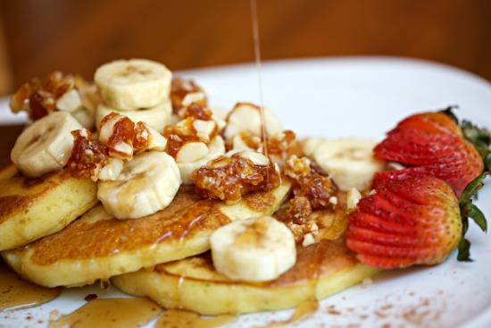
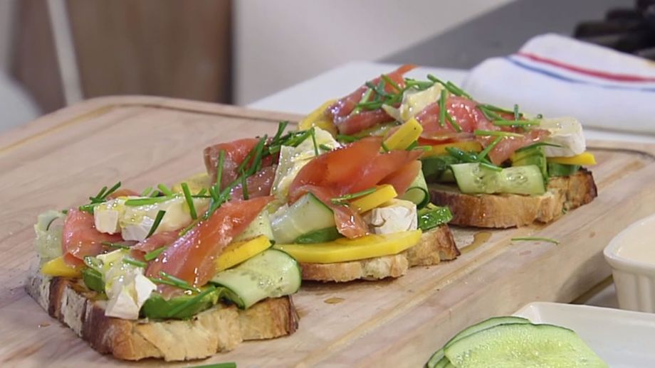

Desayunos Tradicionales
Ver
- ¡Recién hechos! Y con azúcar glass por encima
- Tostada de pan integral con pavo braseado, queso cremoso y tomate
- Bollería francesa de mantequilla
- Croissant o barrita a la plancha
Desayunos Especiales
Ver
- Croque monsieur
- Mollete con tomate y jamón ibérico de bellota
- Nuestras clásicas tortitas con nata y sirope
- Tortilla con salchicha, salmón o beicon, acompañados de patatas
Meriendas
Contenido
- Desde las 17:00
- Tortilla española con pan y tomate
- Croissant mixto gratinado con bechamel
- Desde las 15:00
- Helados
- BATIDOS DE HELADOS
- BOLA DE HELADO
- Sabores: Stracciatella, Turrón, Chocolate, Vaenilla
 